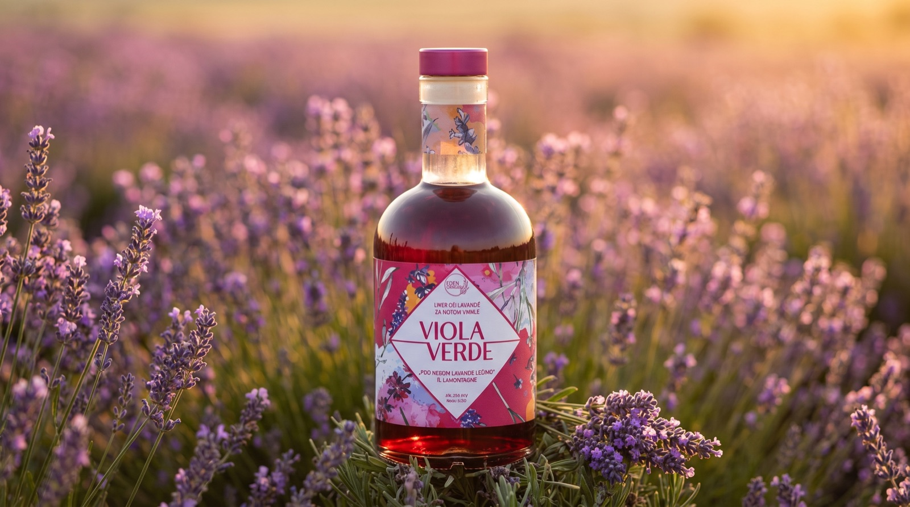

Lavanda koja se pije, a ne samo miriše.
Eden Origin je porodična priča. Na zapuštenom imanju zasadili smo 2.500 struka lavande i, posle dve godine pokušaja, napravili ViolaVerde, prvi pravi liker od lavande, omekšan vanilom. Sve ubrano i pravljeno rukom, bez hemije.

Tri proizvoda iz istog zasada
Ista lavanda, tri različita raspoloženja. Sve počinje u redovima koje plevimo rukom.
ViolaVerde · vanila
Prvi i najprodavaniji. Lavanda omekšana vanilom, mekana i elegantna. Odličan kao digestiv ili u koktelu.
Pogledaj proizvod → Liker · 25% alk.ViolaVerde · borovnica
Druga varijanta. Lavanda uravnotežena borovnicom, dublji, voćni profil za one koji vole punije ukuse.
Pogledaj proizvod → Sirup · bez alkoholaRamonda sirup
Bezalkoholni sirup od lavande za limunade, čajeve i deserte. Za celu porodicu, u svako doba dana.
Pogledaj proizvod →Ništa iz fabrike. Sve iz reda lavande.
- Ručna berba i plevljenje 2.500 struka, bez hemijskih preparata.
- Dvostruka maceracija cveta lavande, pa vanile, ukus koji se ne može ubrzati.
- Male serije, svaka flaša iz iste bašte u Milićevcima.
- Priznat rad: grant od 10.000 funti među 80 prijavljenih.
Sestra i brat
Dvoje ekonomista koji su umesto voćnjaka napravili mali raj od lavande.
Porodično imanje
Zapušteno imanje vraćeno u život redovima mirisne lavande.
Od flaše do stola
Lavanda nije samo za digestiv. Evo šta naši kupci najčešće prave.
Spremni da probate leto u čaši?
ViolaVerde stiže na kućnu adresu za 48 sati preko Ananasa. Poklon-pakovanja na upit.
Poruči na Ananasu